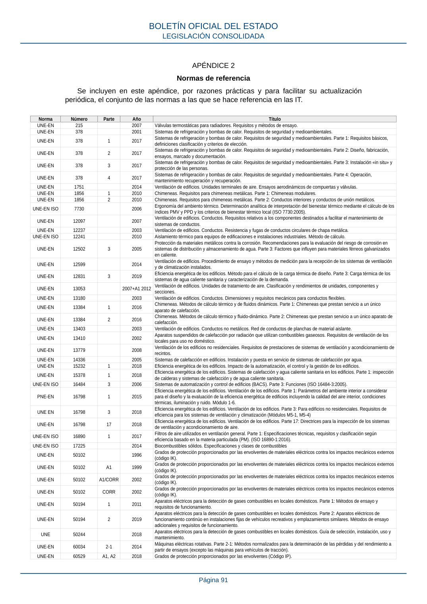

RITE · APÉNDICE 2. Normas de referencia · versión 2022-08-02 · capa asociada
Formatos: JSON compacto · Markdown · PDF fuente
Ámbito del documento · texto del ámbito · documento y tablas
ID técnico a0118 · PDF pág. 91 · jerarquía no validada por persona · contrastado con el literal de la página 91 (marcador PDF); no validado por persona · padre: a0116
APÉNDICE 2 Normas de referencia Normas de referencia

PDF fuente redistribuible: copia fiel enlazada en esta página (SHA256 verificado).